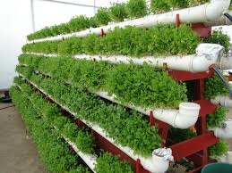

Como atuamos?
Nós da Cesta Amiga promovemos a solidariedade de parceiros e amigos que acreditam no nosso objetivo, agindo por meio de doações e da parceiria com restaurantes e comercios para evitar o deperdício de alimentos, direcionando para aqueles que precisam.
Além de acreditarmos na autosustenbalidade a partir sistemas de agricultura de fácil acesso e sustentáveis. Criando uma independência de produção alimentar aqueles que tem acesso a terra.
Resultados
+20
toneladas de alimentos arrecadados
25
parceirias
+11
mil pessoas benefíciadas
Projetos
Cultura Aquaponia
ajudamos na agricultura familiar, para aqueles que vivem da terra implementando formas sustentáveis de culturas agrícolas
